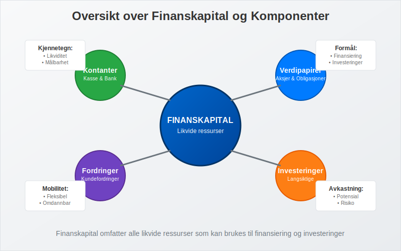
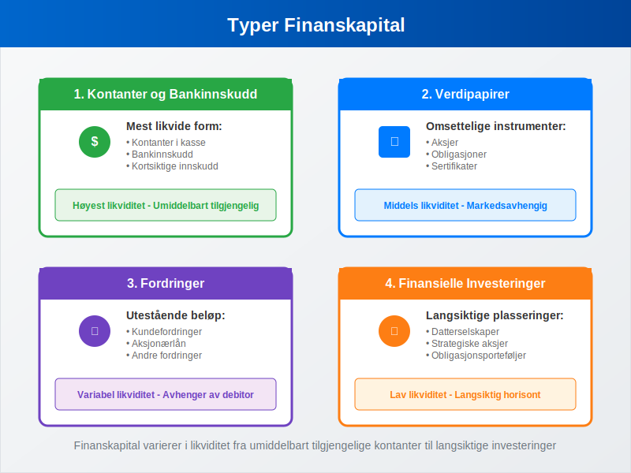
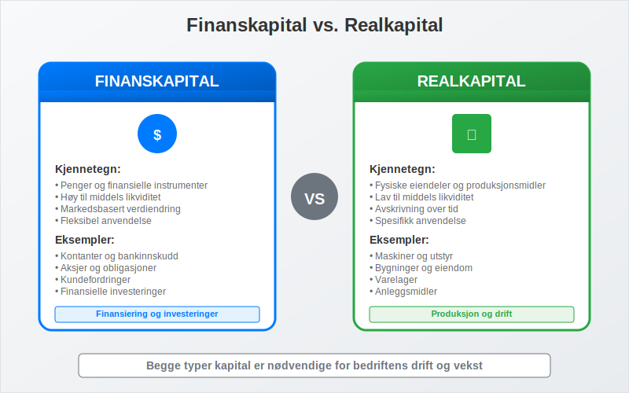
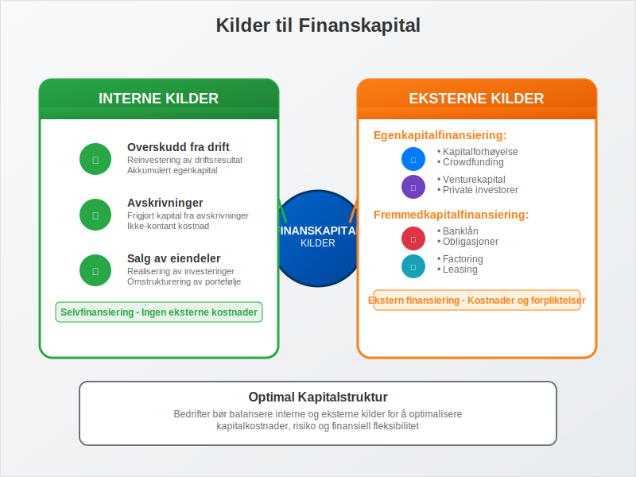
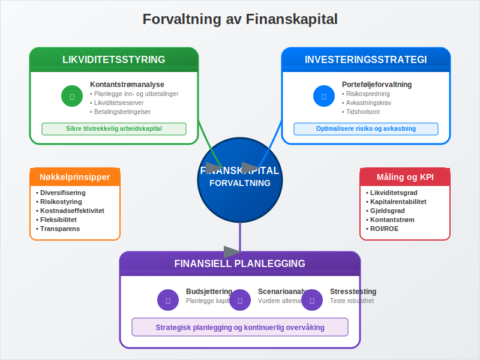

Finanskapital er penger og finansielle instrumenter som kan brukes til å finansiere investeringer og drift i en bedrift. I motsetning til realkapital (fysiske eiendeler som maskiner og bygninger), representerer finanskapital den likvide kapitalen som kan omdannes til andre former for eiendeler eller brukes direkte i forretningsoperasjoner.
Finanskapital utgjør en fundamental del av enhver bedrifts egenkapital og arbeidskapital, og er avgjørende for å forstå bedriftens finansielle stilling og evne til å finansiere vekst og daglig drift.

Definisjon og Kjennetegn
Finanskapital kan defineres som alle former for kapital som kan måles i pengeverdi og som har følgende kjennetegn:
- Likviditet: Kan relativt enkelt omdannes til kontanter
- Målbarhet: Har en klar pengeverdi som kan beregnes
- Mobilitet: Kan flyttes mellom ulike investeringer og anvendelser
- Avkastningspotensial: Kan generere avkastning gjennom investeringer
I regnskapssammenheng føres finanskapital som finansielle eiendeler på aktivasiden i balansen.
Typer Finanskapital
Finanskapital kan kategoriseres i flere hovedtyper, hver med sine spesifikke egenskaper og anvendelsesområder:

1. Kontanter og Bankinnskudd
Den mest likvide formen for finanskapital:
- Kontanter: Fysiske penger i kasse
- Bankinnskudd: Penger på bedriftens bankkontoer
- Kortsiktige innskudd: Sparekonto og andre likvide plasseringer
2. Verdipapirer
Finansielle instrumenter som kan omsettes:
- Aksjer: Eierandeler i andre selskaper
- Obligasjoner: Gjeldsinstrumenter som gir fast avkastning
- Sertifikater: Kortsiktige gjeldspapirer
- Derivater: Finansielle kontrakter basert på underliggende eiendeler
3. Fordringer
Penger som andre skylder bedriften:
- Kundefordringer: Utestående fakturaer fra kunder
- Aksjonærlån fra AS: Lån gitt til aksjonærer
- Andre fordringer: Forskuddsbetalinger og tilgodehavender
4. Finansielle Investeringer
Langsiktige finansielle plasseringer:
- Investeringer i datterselskaper
- Strategiske aksjeposter
- Obligasjonsporteføljer
- Alternative investeringer
Finanskapital vs. Realkapital
Det er viktig å forstå forskjellen mellom finanskapital og realkapital:
| Aspekt | Finanskapital | Realkapital |
|---|---|---|
| Definisjon | Penger og finansielle instrumenter | Fysiske eiendeler og produksjonsmidler |
| Eksempler | Kontanter, aksjer, obligasjoner | Maskiner, bygninger, anleggsmidler |
| Likviditet | Høy til middels | Lav til middels |
| Verdiendring | Markedsbasert, kan svinge | Avskrivning over tid |
| Anvendelse | Finansiering og investeringer | Produksjon og drift |
| Regnskapsføring | Finansielle eiendeler | Varige driftsmidler |

Betydning for Bedriftens Finansiering
Finanskapital spiller en sentral rolle i bedriftens finansieringsstrategi og påvirker flere viktige områder:
Egenfinansiering
Finanskapital utgjør en viktig del av bedriftens egenfinansiering:
- Aksjekapital: Kontantinnskudd fra eiere
- Opptjent egenkapital: Akkumulert overskudd fra drift
- Kapitalreserver: Overkurs og andre kapitalinnskudd
Arbeidskapitalforvaltning
Finanskapital er avgjørende for å opprettholde tilstrekkelig arbeidskapital:
- Likviditetsreserver: For å møte kortsiktige forpliktelser
- Driftsfinansiering: Finansiere løpende kostnader
- Sesongvariasjoner: Håndtere svingninger i kontantstrøm
Investeringskapasitet
Tilgang på finanskapital bestemmer bedriftens evne til å:
- Ekspandere virksomheten
- Investere i ny teknologi
- Gjennomføre oppkjøp
- Utvikle nye produkter
Kilder til Finanskapital
Bedrifter kan skaffe finanskapital gjennom ulike kanaler:

Interne Kilder
- Overskudd fra drift: Reinvestering av driftsresultat
- Avskrivninger: Frigjort kapital fra avskrivninger
- Salg av eiendeler: Realisering av investeringer
Eksterne Kilder
Egenkapitalfinansiering
- Kapitalforhøyelse: Utstedelse av nye aksjer
- Crowdfunding: Moderne finansieringsform
- Venturekapital: Profesjonelle investorer
Fremmedkapitalfinansiering
- Banklån: Tradisjonell lånefinansiering
- Obligasjoner: Lån fra kapitalmarkedet
- Factoring: Salg av kundefordringer
Regnskapsføring av Finanskapital
Korrekt regnskapsføring av finanskapital er avgjørende for å gi et riktig bilde av bedriftens finansielle stilling:
Klassifisering i Balansen
Finanskapital klassifiseres som aktiva og deles inn i:
| Kategori | Eksempler | Plassering |
|---|---|---|
| Anleggsmidler | Langsiktige investeringer, aksjer i datterselskap | Finansielle anleggsmidler |
| Omløpsmidler | Kontanter, bankinnskudd, kortsiktige investeringer | Finansielle omløpsmidler |
| Fordringer | Kundefordringer, andre fordringer | Fordringer |
Verdsettelse
Ulike typer finanskapital verdsettes forskjellig:
- Kontanter: Pålydende verdi
- Bankinnskudd: Bokført verdi
- Verdipapirer: Virkelig verdi eller anskaffelseskost
- Fordringer: Pålydende minus avsetning for tap
Regnskapsføring av Endringer
Endringer i finanskapital påvirker både balanse og resultatregnskap:
- Gevinster/tap på investeringer: Føres i resultatregnskapet
- Valutagevinster/-tap: Påvirker finansresultatet
- Utbytte mottatt: Inntektsføres når rett oppstår
Forvaltning og Optimalisering
Effektiv forvaltning av finanskapital krever strategisk planlegging og kontinuerlig overvåking:

Likviditetsstyring
- Kontantstrømanalyse: Planlegge inn- og utbetalinger
- Likviditetsreserver: Opprettholde tilstrekkelig buffer
- Betalingsbetingelser: Optimalisere kundefordringer
Investeringsstrategi
- Risikospredning: Diversifisere investeringsporteføljen
- Avkastningskrav: Sette mål for investeringsavkastning
- Tidshorisont: Tilpasse investeringer til behov
Finansiell Planlegging
- Budsjettering: Planlegge kapitalbehov
- Scenarioanalyse: Vurdere ulike utviklingsalternativer
- Stresstesting: Teste robusthet under press
Utfordringer og Risikofaktorer
Forvaltning av finanskapital innebærer flere risikofaktorer som må håndteres:
Markedsrisiko
- Kurssvingninger: Verdiendringer på investeringer
- Renterisiko: Påvirkning av renteendringer
- Valutarisiko: Eksponering mot valutasvingninger
Likviditetsrisiko
- Finansieringsrisiko: Problemer med å skaffe kapital
- Refinansieringsrisiko: Utfordringer ved fornyelse av lån
- Operasjonell likviditetsrisiko: Mangel på arbeidskapital
Kredittrisiko
- Motpartsrisiko: Risiko for at andre ikke betaler
- Konsentrasjonsrisiko: For stor eksponering mot enkelte kunder
- Systemrisiko: Risiko i det finansielle systemet
Moderne Utviklingstrekk
Finanskapitalmarkedet er i stadig utvikling, med nye trender som påvirker hvordan bedrifter håndterer sin finanskapital:
Digitalisering
- Fintech-løsninger: Nye teknologier for finansforvaltning
- Automatisering: Digitale prosesser for kapitalstyring
- Blockchain: Nye former for finansielle transaksjoner
Bærekraftig Finansiering
- ESG-investeringer: Miljø-, sosial- og styringshensyn
- Grønne obligasjoner: Finansiering av bærekraftige prosjekter
- Impact investing: Investeringer med samfunnsnytte
Alternative Finansieringsformer
- Crowdlending: Peer-to-peer utlån
- Kryptovaluta: Digitale valutaer som investeringsalternativ
- Tokenisering: Digitalisering av tradisjonelle eiendeler
Praktiske Råd for Bedrifter
For å optimalisere forvaltningen av finanskapital bør bedrifter:
Etablere Klare Retningslinjer
- Investeringspolicy: Definere rammer for investeringer
- Likviditetspolicy: Sette mål for kontantbeholdning
- Risikopolicy: Etablere risikorammer og -kontroller
Implementere Kontrollsystemer
- Rapportering: Regelmessig overvåking av finansiell posisjon
- Autorisasjon: Klare fullmakter for finansielle beslutninger
- Segregering: Adskillelse av oppgaver for intern kontroll
Kontinuerlig Kompetanseutvikling
- Opplæring: Sikre kompetanse innen finansforvaltning
- Markedsovervåking: Følge med på utviklingen i finansmarkedene
- Profesjonell rådgivning: Bruke ekstern ekspertise ved behov
Finanskapital er en kritisk ressurs for enhver bedrift, og effektiv forvaltning av denne kapitalen kan være avgjørende for bedriftens suksess og langsiktige bærekraft. Ved å forstå de ulike typene finanskapital, deres egenskaper og hvordan de kan forvaltes optimalt, kan bedrifter ta bedre finansielle beslutninger og sikre en solid økonomisk fremtid.